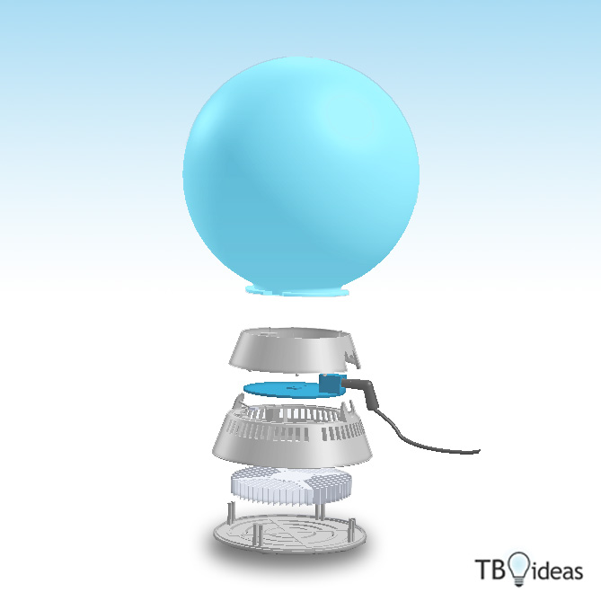

<section>
	<div class="span10 offset1">
		<div class="row" align="center">
			<div class="span3 block">
	 			
			</div>
			<div class="span6" align="left">
				<h3><i class="icon-wrench icon-large"></i>&nbsp;&nbsp;Dimensions et matériaux</h3>
				<p>La base de Loochi a été désignée par Dr. Jürgen Kienhofer sous licence CC-BY-SA. Elle est réalisée en plastique moulé sur laquelle un plaquage chrome mat est appliqué. Elle a un diamètre de 150mm, tout comme la sphère qui reflète la lumière dans toutes les directions. La hauteur globale de Loochi est de 184mm.
				</p>
				<h3><i class="icon-eye-open icon-large"></i>&nbsp;&nbsp;LEDs</h3>
				<p>L'ampoule LEDs de Loochi n'ont rien à voir avec les LEDs que vous avez déjà vu.<br/>
					Nous avons choisi <a href="http://www.ledengin.com/technology/platform">la technologie Luxigen de LED Engin</a> qui fournit une incroyable quantité de lumière pour l'ensemble des couleurs!<br/>Pour les experts techniques, il s'agit d'une LED RGB qui fournit 10W de puissance (à peu près autant qu'une ampoule 40W traditionelle).<br/>La durée de vie de ces ampoules LEDs est estimée à plus de 100.000 heures (soit presque 12 ans en continue) !</p>
				<h3><i class="icon-rss icon-large"></i>&nbsp;&nbsp;Connexion Bluetooth 4.0</h3>
				<p>La nouvelle norme sans fil Bluetooth 4.0 (ou Bluetooth Low Energy) permet une communication sans aucune configuration !</p>
				<h3><i class="icon-tasks icon-large"></i>&nbsp;&nbsp;Application de commande à distance</h3>
				<p>Accèdez à tous les contrôles avancés de Loochi directement depuis l'interface de votre smarthpone ou tablette iOS (iPhone/iPad) et Androïd et découvrez des nouvelles fonctionnalités au fil des mises à jour de l'application!</p>
				<h3><i class="icon-off icon-large"></i>&nbsp;&nbsp;Bouton de contrôle</h3>
				<p>Allumez et étaignez rapidement votre Loochi, qui s'éclairera automatiquement avec la dernière couleur que vous avez utilisée.</p>
				<h3><i class="icon-copy icon-large"></i>&nbsp;&nbsp;OpenSource hardware</h3>
				<p>Loochi est complètement open-source: de l'électronique à l'application mobile en passant par les plans du socle! <br/>Nous sommes ravis de rejoindre un mouvement large de projets Open-Hardware qui apportent les bénéfices de l'Open-Source au monde hardware. Nous avons hâte de voir quels nouveaux objets seront construits à partir de Loochi !</p>
				<h3><i class="icon-heart icon-large"></i>&nbsp;&nbsp;Open design</h3>
				<p>Designez et imprimez vous mêmes des abats-jour pour Loochi ! Les plans sont entièrement disponibles !</p>
			</div>
		</div>
	</div>
</section>
